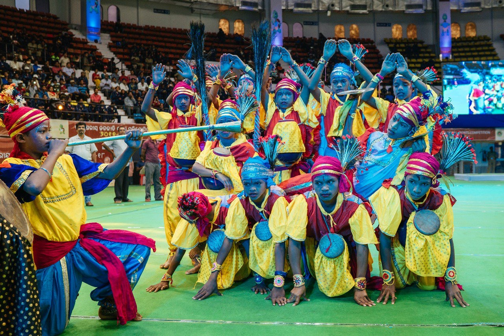

THIS DISTRICT IS RICH IN CULTURE.
- GHUMRA:All over the district,
18 / 20 Artists perform Ghumura Dance on Nuakhai, Dushara and other Festival occasions.
- BAJASAL:Bhawanipatna, Kesinga, Junagarh, Dharamgarh, Koksara, etc.
A Typical Folk Dance, male & female Artists of 16 / 18 perform Bajashal Dance during marriage, and other social functions.
Instruments like Nishan, Dhol, Manuri, Tasa etc.
- BANABADI:Junagarh, Bhawanipatna.
15 / 16 Artists Specially male perform Banabadi Dance. This dance is Specially of the Yadav Samaj.
They hold sticks and dance in a rethemic pattern. This dance is performed during Dola Purnima,
Chaitra Purnima and other occasions.
- SINGH BAJA:Bhawanipatna, Th.Rampur, Lanjigarh, Koksara, etc.
8 / 10 Artists Specially musicians perform this dance. The Singa or horn is fixed on the Nishan.
During marriage occasion accompanied by Nishan, Dhol, Tasa, Mahuri and Tal etc. this dance is performed.
- MADLI:Koksara, Jaipatna, Junagarh, etc.
15 / 16 Artists of Gand Tribe perform this dance during social occasions.
Specially this is related to agricultural functions.
